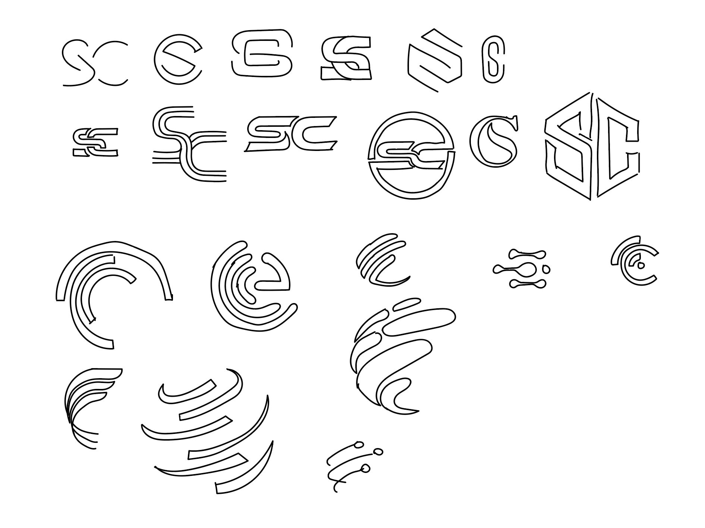
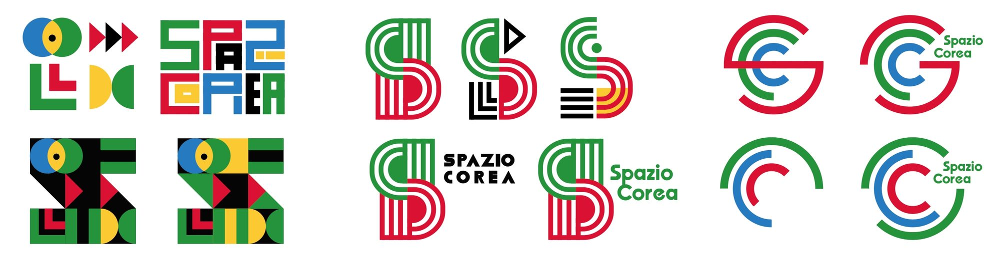
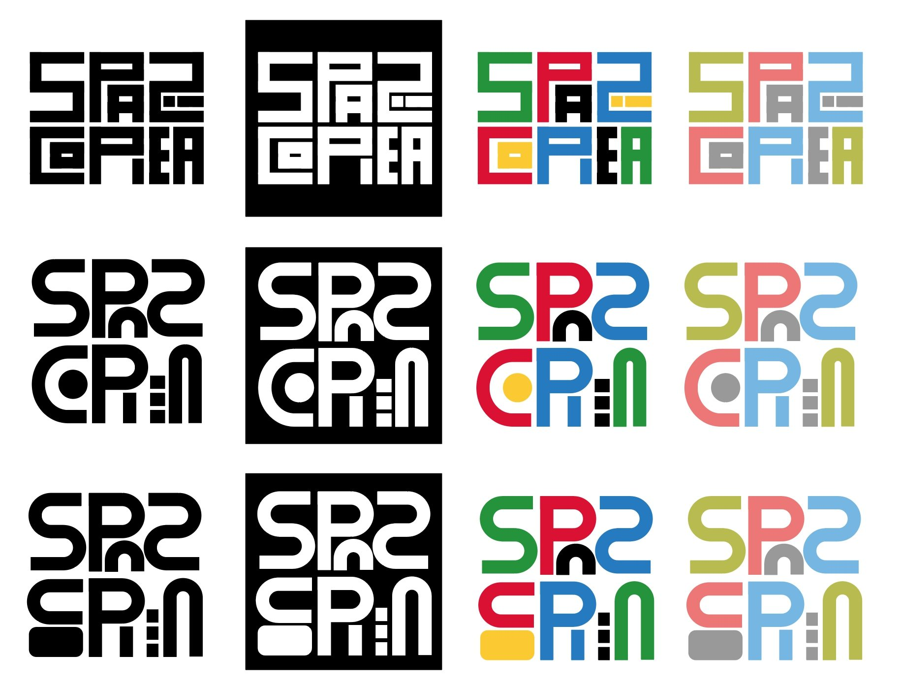
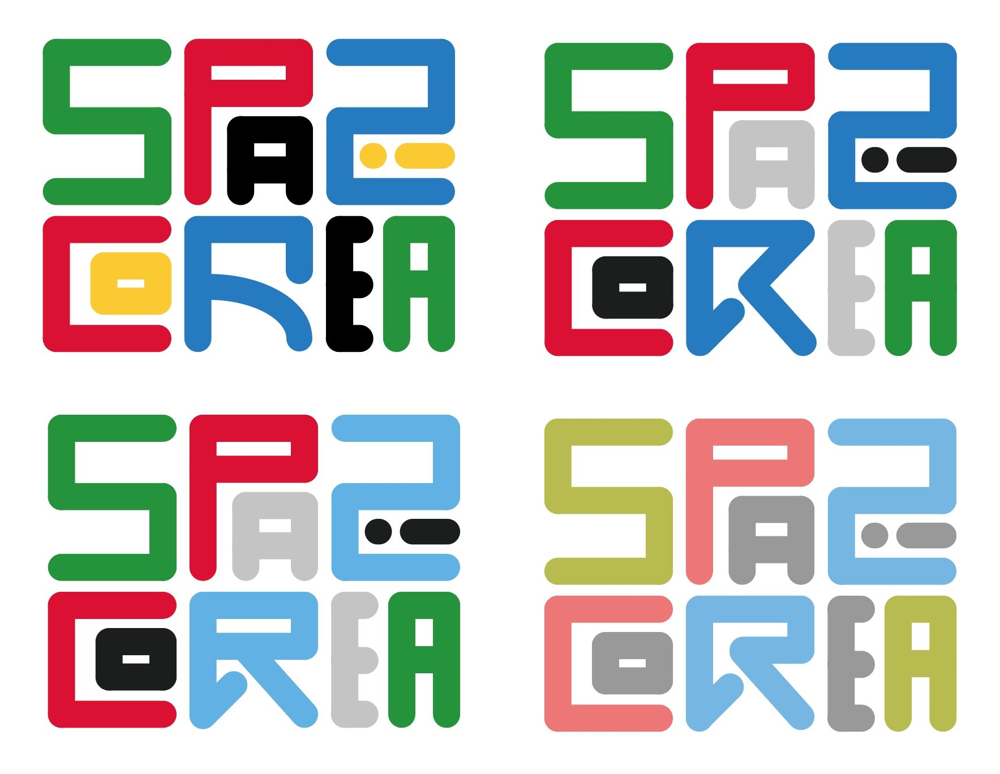
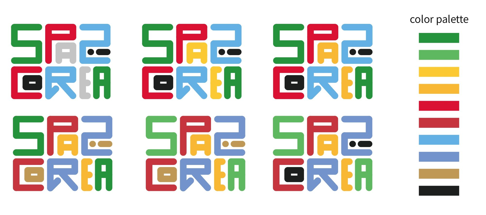
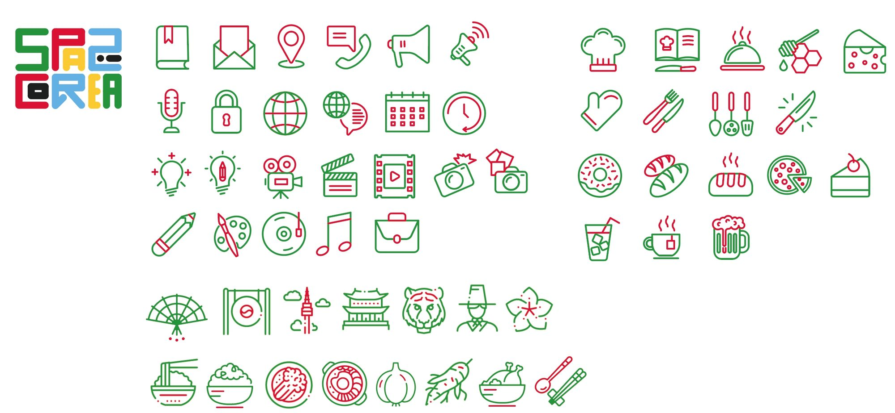
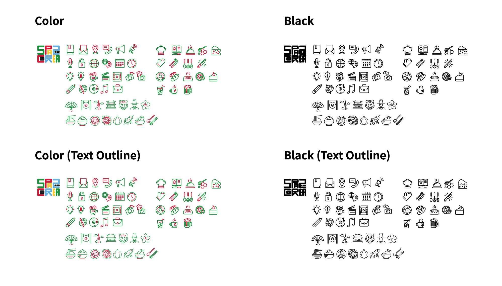

Spazio Corea
A playful, modular identity for an Italian platform that brings Korean culture to Italy.
Korean at heart, easy to read in Italy
Spazio Corea is a new project introducing Korean culture to an Italian audience. The brand needed an online identity that felt unmistakably Korean without leaning on clichés, read clearly to Italian visitors, and stayed recognisable everywhere from a website header to a tiny social avatar.
It also needed a visual language to organise a wide range of content: news, events, film and music, food, and Korean traditions.
From 25+ sketches to one system
I started on paper, explored several clearly different directions, then refined one into a flexible system the client could use on their own.
Research & sketching
25+ hand sketches around the letters S and C, space and connection.
Concept directions
Five directions, from geometric blocks to concentric “C” forms.
Refinement
The modular wordmark rebuilt with rounded strokes for warmth and legibility.
Colour & icons
Palette tests, then a 56-icon set in colour, black and outline versions.




A stacked wordmark built from simple strokes
SPAZIO and COREA stack into a compact square made of simple, rounded strokes, so the logo holds up at small sizes and works as an avatar on its own. Each letter carries its own colour, giving the brand a lively, welcoming personality.
The palette pairs green and red with sky blue, yellow and black, a quiet nod to both Italy and Korea without copying either flag.



An identity the client could launch with, and a lasting relationship
The project closed with a 5-star review and an open door for future work.
“Ggot Bom has been creative, precise and has helped us creating our online identity for a new project regarding Korean culture in Italy. Will collaborate with her in the future.”
Vincenzo · Spazio Corea, Italy
Bringing your brand to Korea, or Korea to your market?
I’m a Korean brand & marketing designer with 16+ years of experience. Tell me who you want to reach, and I’ll reply with a first idea.